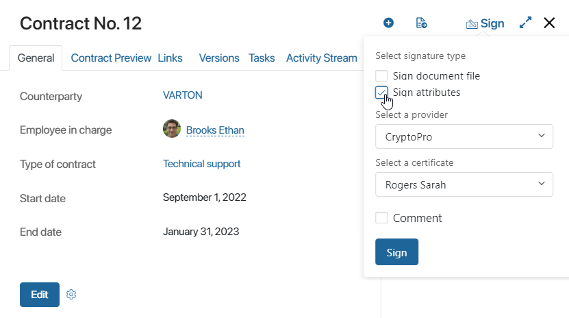
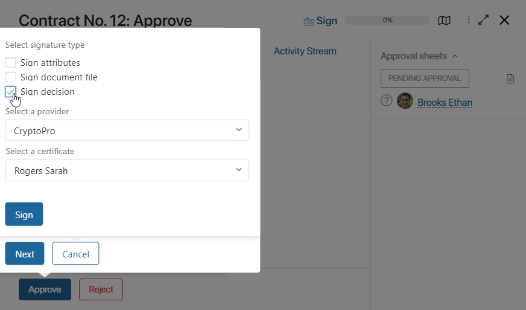
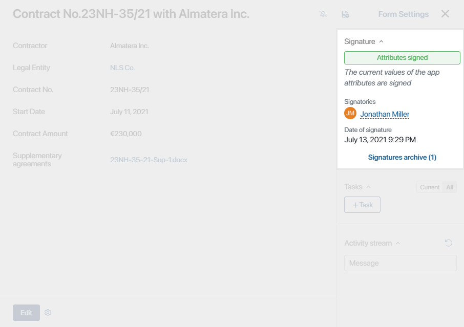
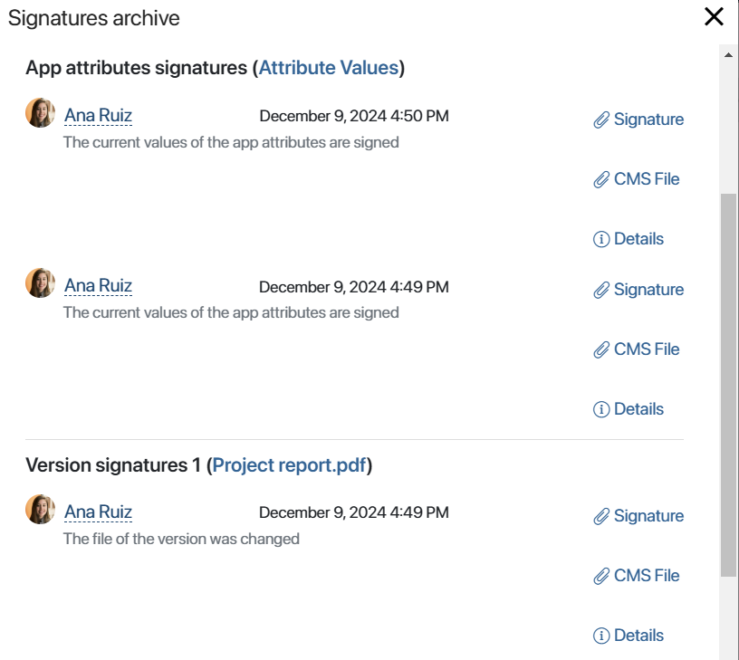

In BRIX, an electronic digital signature (EDS) can be used to sign items of any app: a Standard app, an Event, or a Document. For instance, you can approve and sign a loan request or a contract.
The following types of digital signatures are used in the system:
- Advanced qualified electronic signature. For this type of signature, the public key is contained in a certificate issued by a qualified trust service provider.
- Advanced non-qualified electronic signature. This type of signature is only valid for the participants of the electronic document exchange. It can be used to sign legal documents if the participants agree to it.
- Simple electronic signature. A type of signature in which a login, password, one-time codes, SMS, etc. are used to confirm the fact that a certain person has formed an electronic signature. This signature is not suitable for signing legally significant documents. This type of signature is created inside the BRIX system.
начало внимание
The signature can be used only by users for whom a certificate of one of the providers available in the system has been issued.
конец внимание
To make signing available to users, the administrator needs to enable one of the modules for integration with electronic signature providers. You can use standard modules of CryptoPro, NCA, Sign.Me, Contour, SES, or configure a custom signing module.
Sign an app item
You can sign an item:
- On its page, if the administrator has granted you permission in the app settings. To do this, click Sign in the top panel.

- Within the sign task in the business process. In such a task, you can view the document and select one of two resolutions, sign, or reject.
- As part of a custom task in a business process. To proceed to signing of a specified item, click the customized task completion button.
- As part of the approval and information tasks in the business process, if the administrator has enabled signing in the activity settings.

Open the Signature window in the item or task page and set the parameters:
- Select what you are signing. Depending on the settings, the available options may vary:
- Attributes. Fields of the app item. For example, for a loan application, this could be the Loaner name, Loan sum, and so on.
- Document file. For Document type apps the option to sign a file, for example, a contract in .docx format, is additionally available.
- Sign decision. The decision you make in the approval task. The option is available if the administrator has enabled the Sign decision setting.
- If necessary, change the default provider. To do so, click the pencil icon.
- If the URL of the BRIX website is not listed as trusted in the provider settings, a window will open where you need to allow access to certificates. After that, a field for selecting a certificate will appear.
- Specify your certificate. You can view the expiration date and certification center’s name for each certificate (except for CryptoPro).
- Click Sign.
You will be notified when the certificate is verified.
Page of a signed app item
Digital signature details are shown on the right panel of the app item page. Here you can find the following data:

Here you can find the following data:
- Signature. The field displays the signature status, as well as the signature object: file or item attributes.
- Signatories. The list of employees who have signed the current version of the document on its page, as well as in the tasks of its approval or information.
- Signature date. The date of the signature.
- Signatures archive. The archive stores information about all signatures, including the ones added during approval and view tasks. Signatures are grouped based on the signed objects into the following sections: Approval decision signatures, Version signatures, and App attributes signatures. Here you can:
- Click Details and see the data on the signatories and their electronic digital signatures: the name of the provider, signature status, owner's name, number, issue date, and validity of the certificate.
- Download the following files:
- Signed document versions.
- A signature in the .sig format.
- A decision in the .txt format.
- A .cms file with a signature.
Please note, that the name of the signature file uploaded to the PC will be the same as the name of the signed document.
The current signature is valid until the values of the fields of the signed item are changed. That is why the Sign button is not displayed on the app item page. If corrections are made, the document can be re‑signed.
Edit a signed app item
If you edit app fields that the administrator did not include in the exceptions or their values change during the process, the signature becomes invalid. The status in the right panel of the item changes to Signature not valid, and the Sign button becomes available again.
You can sign the app item again. The details of each signature are saved in the archive, so you can always see who and when signed each version.
Found a typo? Select it and press Ctrl+Enter to send us feedback